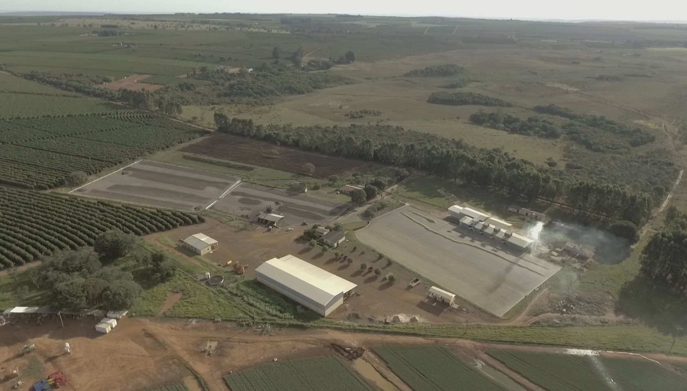

Specialty coffee on every hectare
For three generations the Miaki family has grown coffee in Brazil's Cerrado Mineiro. 2,665 hectares in Patrocínio, most of them on the Chapadão de Ferro, up to 1,250 meters high.
A family in love with coffee, working wisely with nature to grow fantastic lots, sustainably. True gems.
of coffee planted in Patrocínio, Minas Gerais.
growing coffee, three on the Chapadão de Ferro.
of altitude at the highest coffee fields.
of native reserve protected on the farms.



Coffee has been part of the family since the 1930s, when Marcos Cézar Miaki's grandparents came from Japan to work on coffee farms in Paraná. In 1978 the family started over in Patrocínio.
Today the company is run by Marcos Cézar and Brasemir Miaki, with their children Matheus and Amanda. A tradition looking ahead.
Meet MC MiakiSix estates, one standard.
Full estate profiles- 01 Porta do CéuChapadão de Ferro 1,170 to 1,235 maltitude 333 haplanted
- 02 RecantoChapadão de Ferro 1,250 maltitude 493 haplanted
- 03 ShalomChapadão de Ferro 1,200 maltitude 610.06 haplanted
- 04 AbadiaTejuco · Cerrado Mineiro 980 to 1,050 maltitude 196 haplanted
- 05 Bom JardimCerrado Mineiro 900 to 996 maltitude 285 haplanted
- 06 LajinhaLajinha · Cerrado Mineiro 850 to 914 maltitude 501 haplanted
A volcano that never erupted.
The Chapadão de Ferro was born from a volcano that never fully broke open. The contained eruption pushed minerals to the surface, and today they feed one of the most fertile soils in the Cerrado Mineiro.
Understand the terroir- 1,250 m
Altitude. Chapadão fields sit between 1,170 and 1,250 meters.
- Day and night
Wide temperature swings. Warm days and cold nights slow ripening and concentrate sugars.
- In the cup
Bright acidity and, unique to this terroir, a subtle salty touch.
From seedling to cup, fully traceable.
See the process- 01

Precision planting
Selected seedlings and GPS-guided furrows.
- 02

Picked at peak
By machine or by hand, always at the right moment.
- 03

Careful drying
Patios, raised beds and dryers, lot by lot.
- 04

Cupping and selection
Dry milling, blends and cupping before every shipment.
The farm in motion.
All filmsThe fruit of constant work.
Our full story- 20252× 3rd
33rd Coffee Seminar · ACARPA
3rd place in the Productivity Award in two categories: rain-fed (116 bags/ha) and irrigated (104 bags/ha).
- 2020Honoree
illy · Sustainable Supplier of the Year
Recognition of the sustainable farming practiced on every estate.
- 2012 to 20208×
Ernesto Illy Quality Award
Finalist in 8 editions: 2012, 2013, 2014, 2015, 2016, 2018, 2019 and 2020.
- 20131st
Ernesto Illy Quality Award
National champion.
- 2017/18 cropFinalist
5th Cerrado Mineiro Region Award
Recanto Estate, finalist in the Pulped Natural category.
- 2015/16 cropFinalist
3rd Cerrado Mineiro Region Award
Shalom Estate, finalist in the Natural category.
 Rainforest AllianceCertified farms
Rainforest AllianceCertified farms Nespresso AAASustainable quality program
Nespresso AAASustainable quality program C.A.F.E. PracticesStarbucks
C.A.F.E. PracticesStarbucks UTZ CertifiedNow part of Rainforest Alliance
UTZ CertifiedNow part of Rainforest Alliance Cerrado Mineiro RegionDesignation of origin
Cerrado Mineiro RegionDesignation of origin

Cafeeira Porta do Céu.
The group's warehouse, built to store and prepare coffee from the MC Miaki estates, also serves growers across the region.
Store my coffee- StorageIdentified, traceable lots in our own facility.
- Dry milling and preparationCleaning, grading and sorting to the buyer's specs.
- Cupping and standardsCupping to build consistent lots and blends.